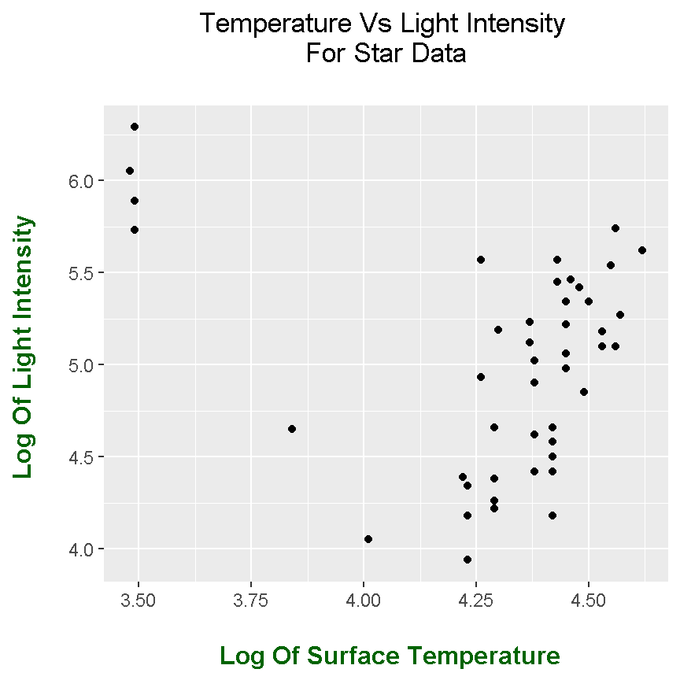
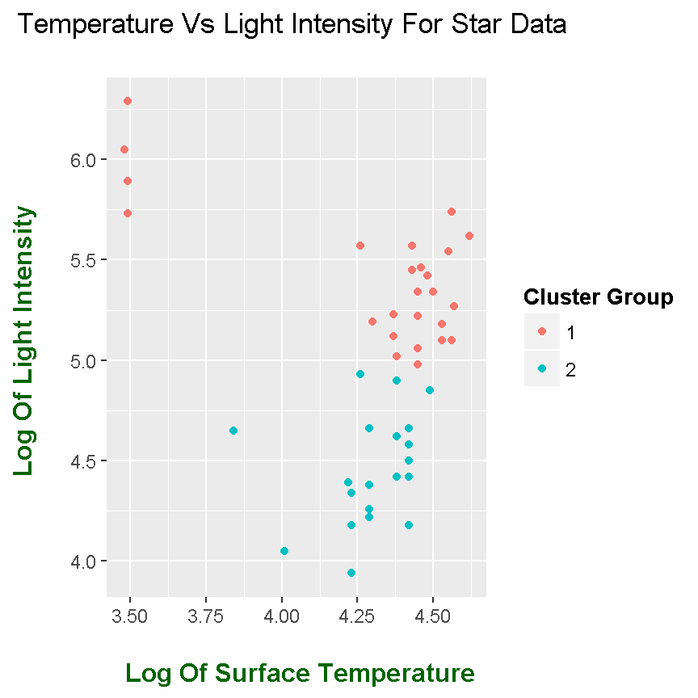
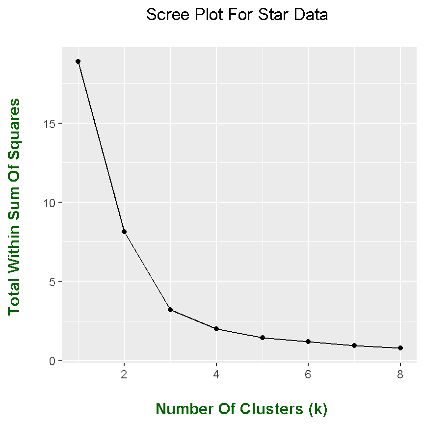
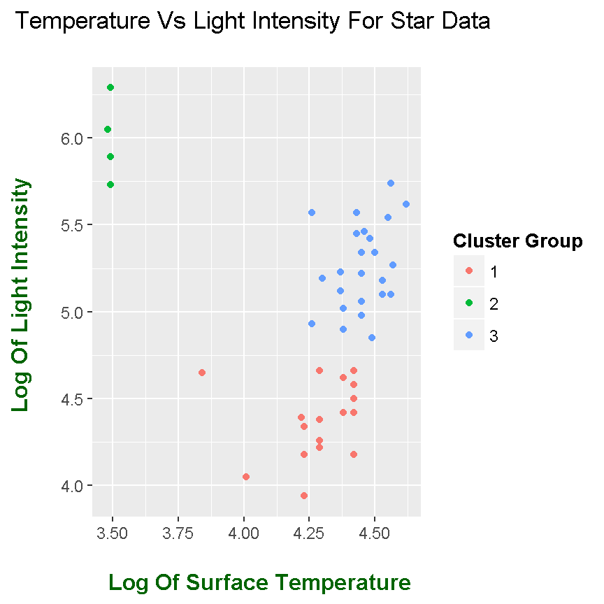
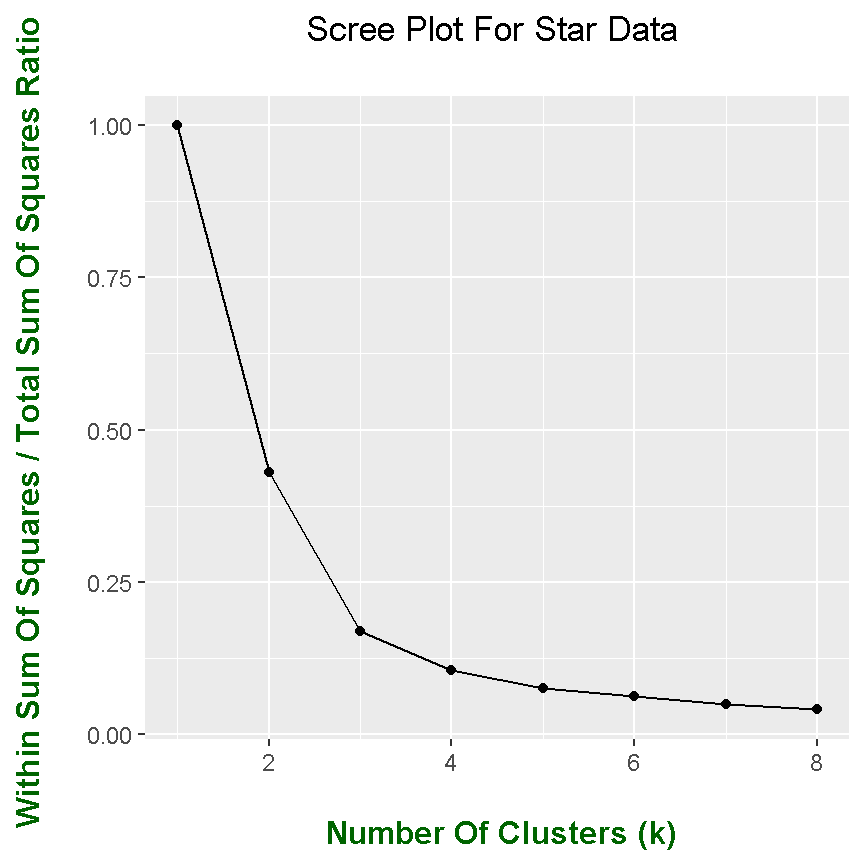
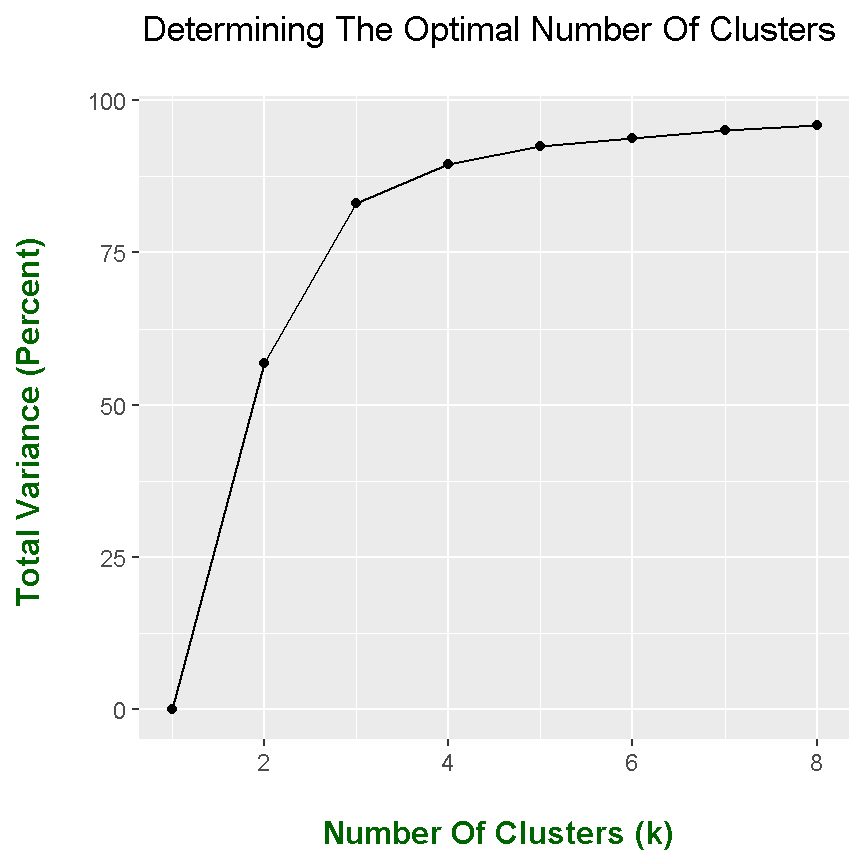

k-Means Clustering In R
Hi there. In this page, I play around with data and apply K-Means Clustering. K-Means Clustering is an unsupervised machine learning technique which groups/clusters data points into a specific number of groups. The user of the algorithm specifies the number of groups by setting the K-Value.
In R (RStudio), I load in the ggplot2 and faraway packages.
## R Markdown
# K-Means Clustering work.
# References:
# https://www.r-bloggers.com/k-means-clustering-in-r/
# R Graphics Cookbook
# R Graphics Cookbook By Winston Chang
# https://www.r-bloggers.com/k-means-clustering-in-r/
# http://stackoverflow.com/questions/14524818/results-of-k-means-used-in-r
# Datacamp Account Notes
library(faraway)
library(ggplot2)
# Save star data from faraway data to star_data variable:
star_data <- star
# Preview data:
head(star_data)## index temp light
## 1 1 4.37 5.23
## 2 2 4.56 5.74
## 3 3 4.26 4.93
## 4 4 4.56 5.74
## 5 5 4.30 5.19
## 6 6 4.46 5.46
From the head() function of star_data, you see that there is an index column which is the same as the row numbers. This column can be removed.
# Remove first column as it is not needed:
star_data <- star_data[, 2:3]
You can explore the dataset even more with the use of the summary() and str() functions.
# Summary and data structure:
summary(star_data)## temp light
## Min. :3.480 Min. :3.940
## 1st Qu.:4.275 1st Qu.:4.540
## Median :4.420 Median :5.100
## Mean :4.310 Mean :5.012
## 3rd Qu.:4.455 3rd Qu.:5.435
## Max. :4.620 Max. :6.290str(star_data)## 'data.frame': 47 obs. of 2 variables:
## $ temp : num 4.37 4.56 4.26 4.56 4.3 4.46 3.84 4.57 4.26 4.37 ...
## $ light: num 5.23 5.74 4.93 5.74 5.19 5.46 4.65 5.27 5.57 5.12 ...
With the use of ggplot2 graphics, you can generate a nice initial scatterplot to have a sense of what the data is like.
# Initial Plot (With Full Labels)
ggplot(star_data, aes(x = temp, y = light)) + geom_point() +
labs(x = "\n Log Of Surface Temperature", y = "Log Of Light Intensity \n",
title = "Temperature Vs Light Intensity \n For Star Data \n") +
theme(plot.title = element_text(hjust = 0.5),
axis.title.x = element_text(face="bold", colour = "darkgreen", size = 12),
axis.title.y = element_text(face="bold", colour = "darkgreen", size = 12),
legend.title = element_text(face="bold", size = 10))
K-Means Clustering In R
Doing K-Means Clustering In R is not too difficult. To do the clustering use the kemans() command in R.
# k-Means Clustering In R
# Set random seed:
set.seed(20)
star_Cluster <- kmeans(star_data, centers = 2, nstart = 25)
star_Cluster## K-means clustering with 2 clusters of sizes 27, 20
##
## Cluster means:
## temp light
## 1 4.320741 5.423704
## 2 4.295500 4.456500
##
## Clustering vector:
## 1 2 3 4 5 6 7 8 9 10 11 12 13 14 15 16 17 18 19 20 21 22 23 24 25
## 1 1 2 1 1 1 2 1 1 1 1 1 1 2 2 2 2 2 2 1 2 2 2 2 1
## 26 27 28 29 30 31 32 33 34 35 36 37 38 39 40 41 42 43 44 45 46 47
## 2 2 2 2 1 2 1 1 1 2 1 1 1 1 1 2 1 1 1 1 1 2
##
## Within cluster sum of squares by cluster:
## [1] 6.254615 1.891550
## (between_SS / total_SS = 56.9 %)
##
## Available components:
##
## [1] "cluster" "centers" "totss" "withinss"
## [5] "tot.withinss" "betweenss" "size" "iter"
## [9] "ifault"
From the star_Cluster output, you can see the centers of each cluster as a co-ordinate. In addition, you can see which points are assigned to each cluster. (The two clusters are 1 and 2.)
In the next pieces of code, I create a new copy of the star_data dataset and add the cluster assignments as a new column. This will help with plotting later.
# Create new copy of star_data for kmeans with 2 clusters
star_data_cl2 <- star_data
# Add star_Cluster cluster component as new column to star_data_cl2:
star_data_cl2$clusterType <- as.factor(star_Cluster$cluster)
This ggplot code chunk is very similar to the previous one. What is included is colour = clusterType in the aes() part in ggplot().
# Plot with Two Clusters Indicated By Colours:
ggplot(star_data_cl2, aes(x = temp, y = light, colour = clusterType)) +
geom_point() +
labs(x = "\n Log Of Surface Temperature", y = "Log Of Light Intensity \n",
title = "Temperature Vs Light Intensity For Star Data \n",
colour = "Cluster Group") +
theme(plot.title = element_text(hjust = 0.5),
axis.title.x = element_text(face="bold", colour = "darkgreen", size = 12),
axis.title.y = element_text(face="bold", colour = "darkgreen", size = 12),
legend.title = element_text(face="bold", size = 10))
You can explore the outputs from the K-Means algorithm in R. Refer to the code with comments below.
#----------------------------------------------
## Understanding the outputs of k-means:
# cluster output from star_cluster:
star_Cluster$cluster## 1 2 3 4 5 6 7 8 9 10 11 12 13 14 15 16 17 18 19 20 21 22 23 24 25
## 1 1 2 1 1 1 2 1 1 1 1 1 1 2 2 2 2 2 2 1 2 2 2 2 1
## 26 27 28 29 30 31 32 33 34 35 36 37 38 39 40 41 42 43 44 45 46 47
## 2 2 2 2 1 2 1 1 1 2 1 1 1 1 1 2 1 1 1 1 1 2# Cluster centres:
star_Cluster$centers## temp light
## 1 4.320741 5.423704
## 2 4.295500 4.456500# Size Of Each Cluster:
star_Cluster$size## [1] 27 20# Number of Iterations:
star_Cluster$iter## [1] 1# ifault component:
star_Cluster$ifault## [1] 0# Within Cluster sum of squares (Sum Of Squares In Each Cluster):
star_Cluster$withinss## [1] 6.254615 1.891550# Total Within Sum of Squares (Add Within Cluster SumSquares Together):
star_Cluster$tot.withinss## [1] 8.146165# Between Clusters Sum Of Squares:
star_Cluster$betweenss## [1] 10.75542# Total Sum Of Squares = BetweenSumSquares + Total Within SumSquares
star_Cluster$totss## [1] 18.90159
Scree Plots For Determining The Optimal Number Of Clusters
A natural question would be how many clusters to choose on the data? What is an objective way of determining the number of clusters? One way is with the us of a visual aid called the scree plot.
To develop a scree plot, a dataset needs to be constructed such that there are a sequence of the number of clusters in one column along with its corresponding total within cluster sum of squares in another column.
#### Optimal Amount Of Clusters (k):
# Scree Plot For Determining Optimal k Clusters.
total_wsumsq <- rep(0, 8) #Initialize
for (k in 1:8){
star_kmeans <- kmeans(star_data, centers = k, nstart = 25)
# Scree Plot: use total within cluster sum of squares
total_wsumsq[k] <- star_kmeans$tot.withinss
}
Generating a scree plot in base R is quite simple. The default plot() should do.
## Scree Plot In Base R:
plot(x = 1:8, y = total_wsumsq , xlab = "Number Of Clusters (k)",
ylab = "Total Within Sum Of Squares") +
lines(x = 1:8, y = total_wsumsq)
## integer(0)
Generating a scree plot with ggplot2 graphics requires a little bit more work. Before using the ggplot() function and its add-on functions a data frame needs to be constructed.
## ggplot2 Version Of Scree Plot:
# Create table
scree_table <- data.frame(cbind(1:8, total_wsumsq))
scree_table ## V1 total_wsumsq
## 1 1 18.9015872
## 2 2 8.1461648
## 3 3 3.1994379
## 4 4 1.9850971
## 5 5 1.4314322
## 6 6 1.1715345
## 7 7 0.9351188
## 8 8 0.7721180# Change column names:
colnames(scree_table) <- c("k", "TWSS")
# Scree ggplot plot:
ggplot(scree_table, aes(x = k, y = TWSS)) + geom_point() + geom_line() +
labs(x = "\n Number Of Clusters (k)", y = "Total Within Sum Of Squares \n",
title = "Scree Plot For Star Data \n") +
theme(plot.title = element_text(hjust = 0.5),
axis.title.x = element_text(face="bold", colour = "darkgreen", size = 12),
axis.title.y = element_text(face="bold", colour = "darkgreen", size = 12),
legend.title = element_text(face="bold", size = 10))
When it comes to selecting the optimal number of clusters, look for the “elbow” in the scree plot. From the scree plot, a good choice for k is 3.
# From scree plot, choose k = 3 as our optimal choice for k:
star_km3 <- kmeans(star_data, centers = 3, nstart = 25)
star_km3## K-means clustering with 3 clusters of sizes 17, 4, 26
##
## Cluster means:
## temp light
## 1 4.281176 4.379412
## 2 3.487500 5.990000
## 3 4.455385 5.275385
##
## Clustering vector:
## 1 2 3 4 5 6 7 8 9 10 11 12 13 14 15 16 17 18 19 20 21 22 23 24 25
## 3 3 3 3 3 3 1 3 3 3 2 3 3 1 1 1 1 1 1 2 1 1 1 3 3
## 26 27 28 29 30 31 32 33 34 35 36 37 38 39 40 41 42 43 44 45 46 47
## 1 1 3 1 2 1 3 3 2 1 3 3 3 3 3 1 3 3 3 3 3 1
##
## Within cluster sum of squares by cluster:
## [1] 1.165071 0.171275 1.863092
## (between_SS / total_SS = 83.1 %)
##
## Available components:
##
## [1] "cluster" "centers" "totss" "withinss"
## [5] "tot.withinss" "betweenss" "size" "iter"
## [9] "ifault"# Create table:
star_km3_cl <- star_data
# Add star_km3 cluster component as new column to star_km3:
star_km3_cl$clusterType <- as.factor(star_km3$cluster)
# Plot with Clusters Indicated By Colours:
ggplot(star_km3_cl, aes(x = temp, y = light, color = clusterType)) +
geom_point() +
labs(x = "\n Log Of Surface Temperature", y = "Log Of Light Intensity \n",
title = "Temperature Vs Light Intensity For Star Data \n",
colour = "Cluster Group") +
theme(plot.title = element_text(hjust = 0.5),
axis.title.x = element_text(face="bold", colour = "darkgreen", size = 12),
axis.title.y = element_text(face="bold", colour = "darkgreen", size = 12),
legend.title = element_text(face="bold", size = 10))
Alternate Scree Plots
### --- An Alternate Scree Plot - One (Proportions):
# Alternate Scree Plot For Determining Optimal k Clusters.
ratio <- rep(0, 8)
for (k in 1:8){
star_kmeans <- kmeans(star_data, centers = k, nstart = 25)
# Scree Plot use total within cluster sum of squares divided by
# Total sum of squares as a ratio
ratio[k] <- star_kmeans$tot.withinss / star_kmeans$totss
}
# Create table
alt_scree <- data.frame(cbind(1:8, ratio))
alt_scree## V1 ratio
## 1 1 1.00000000
## 2 2 0.43097782
## 3 3 0.16926821
## 4 4 0.10502277
## 5 5 0.07573080
## 6 6 0.06198074
## 7 7 0.04961176
## 8 8 0.04084937# Change column names:
colnames(alt_scree) <- c("k", "Ratio")
# Scree ggplot plot:
ggplot(alt_scree, aes(x = k, y = Ratio)) + geom_point() + geom_line() +
labs(x = "\n Number Of Clusters (k)", y = "Within Sum Of Squares / Total Sum Of Squares Ratio \n",
title = "Scree Plot For Star Data \n") +
theme(plot.title = element_text(hjust = 0.5),
axis.title.x = element_text(face="bold", colour = "darkgreen", size = 12),
axis.title.y = element_text(face="bold", colour = "darkgreen", size = 12),
legend.title = element_text(face="bold", size = 10))
The second alternate scree plot focuses on total variance which is the between sum of squares divided by the total sum of squares. Instead of an elbow, look for the part where it goes from steep to flat.
## An Alternate Scree Plot - Two (Total Variance) :
total_var <- rep(0, 8)
for (k in 1:8){
star_kmeans <- kmeans(star_data, centers = k, nstart = 25)
# Scree Plot with total variance: Between Sum Of Squares / Total_SumSquares
total_var[k] <- round( 100 * star_kmeans$betweenss / star_kmeans$totss, 2)
}
# Create table
alt_scree2 <- data.frame(cbind(1:8, total_var))
alt_scree2## V1 total_var
## 1 1 0.00
## 2 2 56.90
## 3 3 83.07
## 4 4 89.50
## 5 5 92.43
## 6 6 93.80
## 7 7 95.05
## 8 8 95.92# Change column names:
colnames(alt_scree2) <- c("k", "Total_Var")
# Scree ggplot plot:
ggplot(alt_scree2, aes(x = k, y = total_var)) + geom_point() + geom_line() +
labs(x = "\n Number Of Clusters (k)", y = "Total Variance (Percent) \n",
title = "Determining The Optimal Number Of Clusters \n") +
theme(plot.title = element_text(hjust = 0.5),
axis.title.x = element_text(face="bold", colour = "darkgreen", size = 12),
axis.title.y = element_text(face="bold", colour = "darkgreen", size = 12),
legend.title = element_text(face="bold", size = 10))